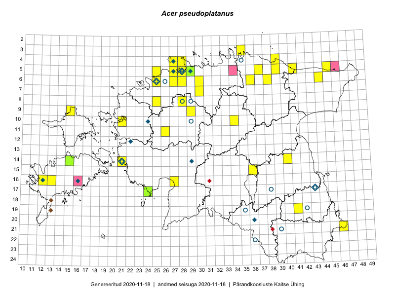

Acer pseudoplatanus
Uuendatud: 2016-12-01
Kaardile koondatud taksonid: Acer pseudoplatanus L.

Kaart põhineb 58 kirjel.
Kuvatud viited 20 esimesele andmebaasikirjele, ülejäänud PlutoFis
- Toomas Kukk, Eerik Leibak: 2015-08-09: 14-15: ala
- Tiit Hallikma, Toomas Kukk: 2015-07-21: 05-45: ala
- Peedu Saar, Liina Oja: 2015-06-08: 10-34: GPS punkt
- Peedu Saar, Liina Oja: 2015-06-08: 10-34: GPS punkt
- Tiit Hallikma, Toomas Kukk: 2015-07-21: 05-45: GPS punkt
- Peedu Saar, Liina Oja: 2015-06-08: 10-34: ala
- Toomas Kukk, Eerik Leibak: 2015-08-11: 09-15: ala
- Toomas Kukk, Eerik Leibak: 2015-08-11: 09-15: GPS punkt
- Rein Kalamees, Kersti Püssa: 2015-08-15: 05-37: ala
- Erkki Otsman, Sergei Smirnov: 2015-07-08: 05-27: ala
- Erkki Otsman, Sergei Smirnov: 2015-06-26: 05-28: ala
- Erkki Otsman, Sergei Smirnov: 2015-07-12: 05-29: ala
- Erkki Otsman, Sergei Smirnov: 2015-07-08: 05-27: GPS punkt
- Mari Reitalu: 2015-07-08: 16-12: ala
- Erkki Otsman, Sergei Smirnov: 2015-07-12: 05-29: GPS punkt
- Sirje Azarov, Aira Alasi: 2015-07-20: 16-13: ala
- Sirje Azarov, Aira Alasi: 2015-07-20: 16-13: GPS punkt
- Mari Metsoja, Jaak-Albert Metsoja: 2015-07-30: 05-25: ala
- Mari Metsoja, Jaak-Albert Metsoja: 2015-05-31: 08-25: ala
- Kaili Orav, Silvia Pihu: 2015-06-19: 05-39: ala